Whenever I think of the power of visuals within the context of music, Pizzicato V's effortlessly cool style always comes to mind. Their eclectic mix of influences, ranging from Pop art to 60s french fashion while retaining a modern feel creates such a memorable aesthatic that would define what Shibuya-kei is to the world.
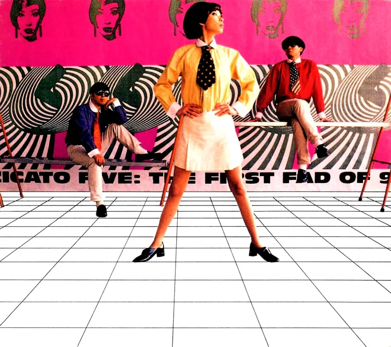
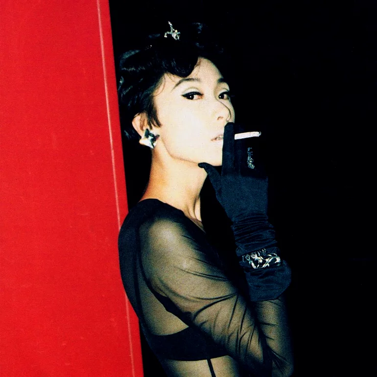
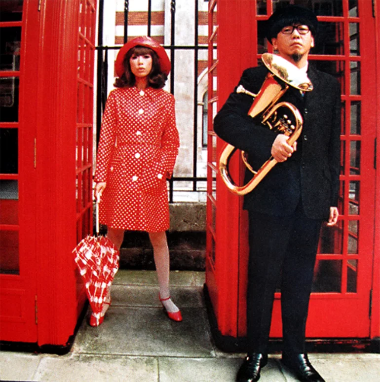

Pizzicato V were a band formed in the mid 80s by university students Yasuharu Konishi and Keitarō Takanami. They
debuted in 1985 with a single produced by Haruomi Hosono, titled "The Audrey Hepburn Complex", however all of their
releases in the 80s were considered commercial failures.
As their music turned from the tame lounge and easy listening
that made up their early releases to the more eclectic and unique sounds that would make up their most popular releases
throughout the 90s, Yasuharu Konishi managed to find his missing ingredient in Maki Nomiya. Nomiya joined in 1990 as the
lead singer of Pizzicato V, replacing Takao Tomija (who would then go on to form another influential shibuya-kei band,
original love).
There could have been no one better to compliment Konishi's music than Nomiya. Not only did her style of singing perfectly
match Konishi's music, her sense of fashion and style pushed Pizzicato V into being much more than just a band, but a whole
identity. Her use of 60s inspired fashion and aesthetics combined with pop art sensibilities and other retro styles in an
updated way really fit the ecclectic influences of Konishi's music.
Pizzicato V through Album Covers
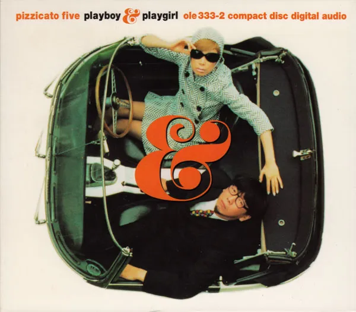
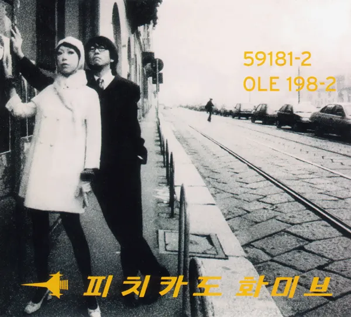
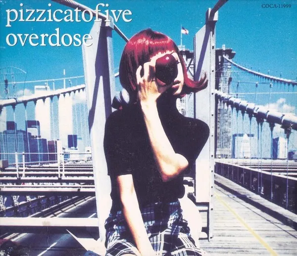
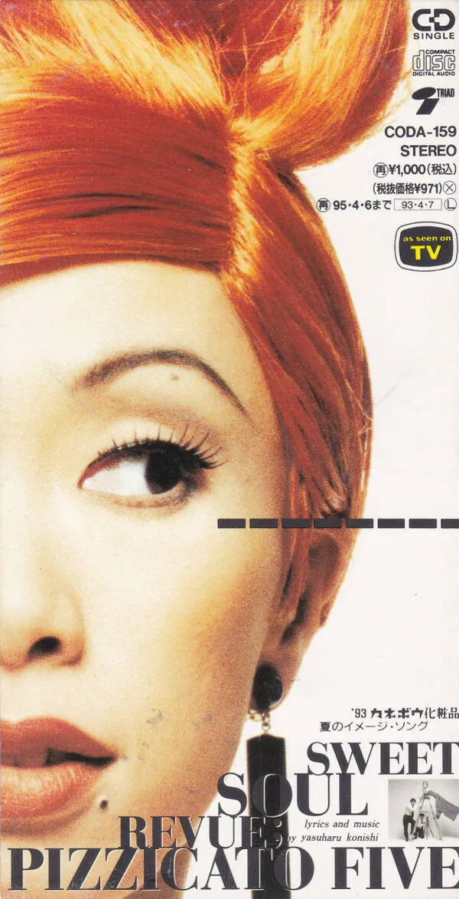
One of the most important mediums used by Pizzicato V to convey their style was through the CDs. There's nothing I love more than a well designed
CD booklet and Pizzicato V are MASTERS at this, their booklets feel like a retro french magazine combined with the modern and fun graphic
design of 90s Japan.
One of Konishi's biggest sources of inspiration is his love for old internation film. In a 1996 interview by Barry Walters, Konishi reflects on this influence.
He explains that when "[he] started writing music, [he] was already so immersed in films that [he] wrote from the same perspective. Whenever [he] plan[s] to
make an album, it seems to be with the same mindset that Godard or Fellini would plan their films." Not only can this be heard in their music, but I feel that we can see this
influence throughout the art direction. Pizzicato Five explores this through their theme of centering albums around specific
cities, as if they were the setting of a film. Looking through the materials for Overdose, Romantique 96, and The International Playboy & Playgirl, the cities these albums
are centered around are quite clear, being New York, Paris and London respectively. To convey these cities to viewers, Pizzicato Five not only uses
the corresponding cities and their iconic landmarks as settings for photographs but also heavily borrows from each city's retro fashion and film styles.
Overdose (1994)
Among my favourite designs in Pizzicato Five's album art is the cover for Overdose (see above). This cover is one of the most simple, featuring a photograph
of Maki Nomiya (as expected, sporting 60s style black blouse and miniskirt) on Brooklin Bridge, New York. The album and artist names are simply placed over the image
in a standard looking font and in white. What I find most intriguing is the apple she's holding over her head. I can't quite tell what the implication of this
was supposed to be, is it referencing René Magritte's son of man? Is it just a reference to New York's nickname, the big apple? Regardless, despite my initial dislike
of this cover, it somehow manages to convey everything that makes Pizzicato V themselves. The high contrast of the image reflects a more contemporary style,
contrasting Maki Nomiya's 60s outfit, while the setting of New York contrasts the band's origins, clearly exemplifying the bands influences and style. Further,
the apple motif gives the cover the sense of playfulness that is present in all of their work, while also (potentially) being a nod towards their art influences. I don't know
maybe I'm onto nothing lol.
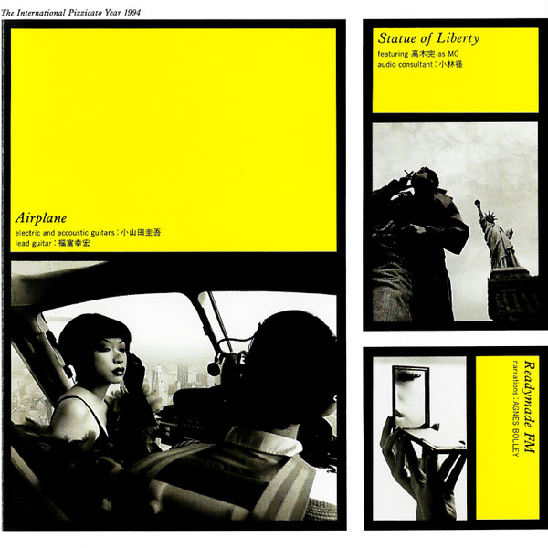
International Playboy & Playgirl (1999)
International Playboy and Playgirl also employ these same concepts on to their respective cities. The name of the album is already something worth
discussing. The title might initially seem meaningless but the choice of these words reflects their pop art sensibilities. The title seems like a
referencce to the famous magazine - emulating Andy Warhol's use of brand names and pop culture references throughout his art - yet the contrast with
the smart and sophisticated outfits in the cover against Playboy magazine's brand identity associated with erotic imagery provides a subtle irony that also mirrors
pop art's use of irony instead of overt criticism. Personally, I find the way in which Maki Nomiya is looking at the viewer, as if examining them, to be particularly
powerful in subverting gender norms and objectification of women in commercial culture. It almost mirrors how you would expect a man to be examining the playboy
magazine. The title as a whole is used to sell a sense of style, with Pizzicato Five using the associations of the words 'International', 'Playboy', and 'Playgirl'
rather than their meanings to do this - with "international" also serving to reflect Pizzicato V's international influences. Placing this title alongside the retro and sophisticated style presented by the outfits chosen, the cover again encompasses everything
that is Pizzicato Five. Taking a look inside the booklet we get to see a set of playful photographs taken of Nomiya and Konishi against iconic London landmarks, which are as
cool as ever.
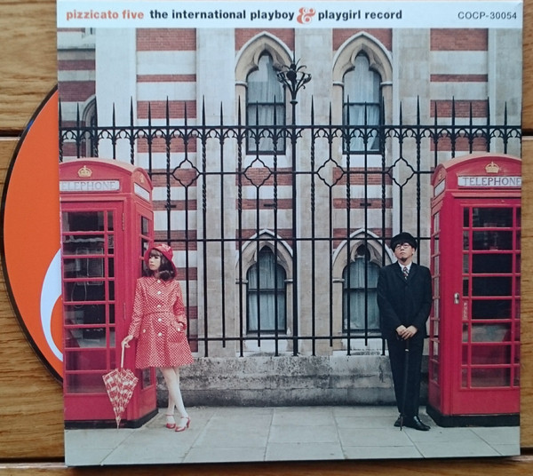
Romantique 96 (1995)
I happen to own a really cool limited edition copy of this CD with a 64 (!!) page booklet, its one of my favourite CDs as you can imagine. I LOVE looking through this booklet so much, its a selection of photos, mostly of Nomiya, taken around Paris all in black and white. They go full OUT on their usual influences throughout this, with the obvious inspiration being French film and music (one of the songs is a Serge Gainsbourg cover done in the style of kraftwerk, which I think tells you everything you need to know about Pizzicato V). Flipping through this feels both like watching an independent short film and flipping through an old french fashion magazine. As always, they look as stylish as ever and manage to somehow be both sophisticated and playful, something that Pizzicato V manages to balance insanely skillfully throughout all of their music and art (I need to learn how they do this).
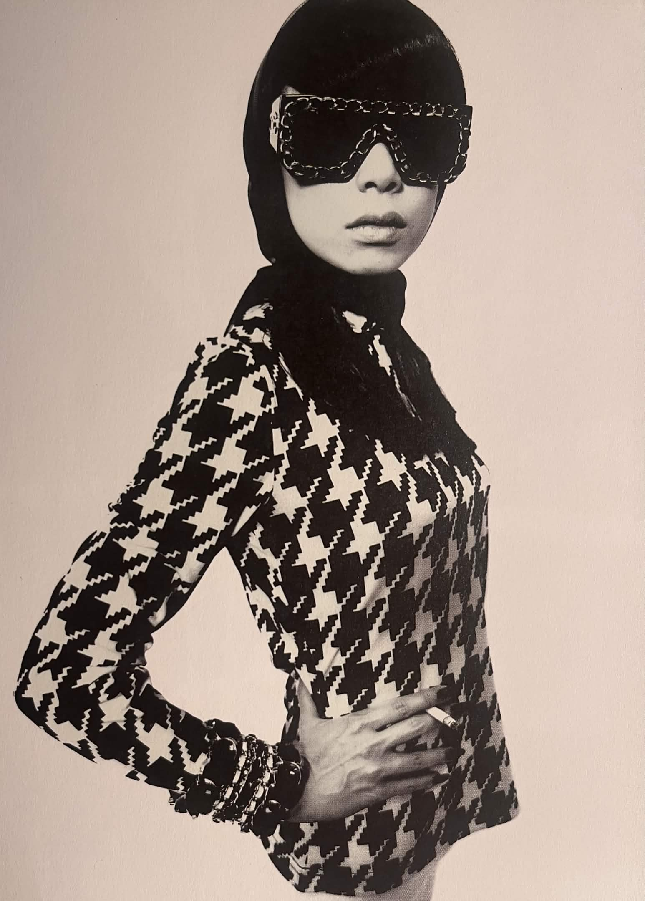
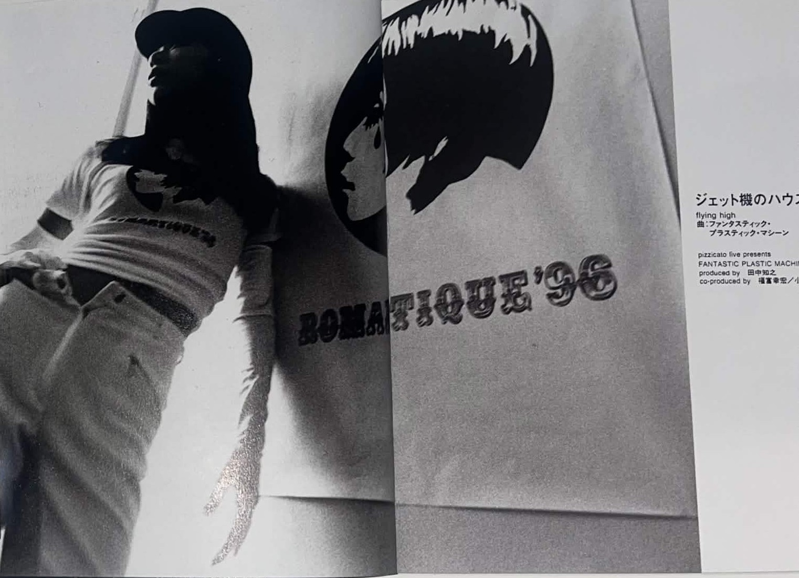
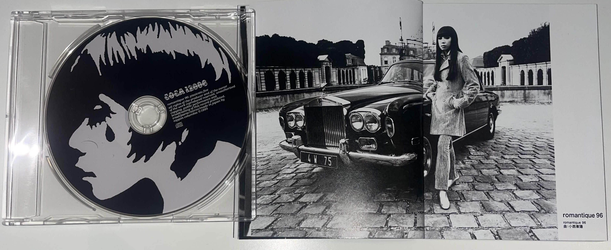
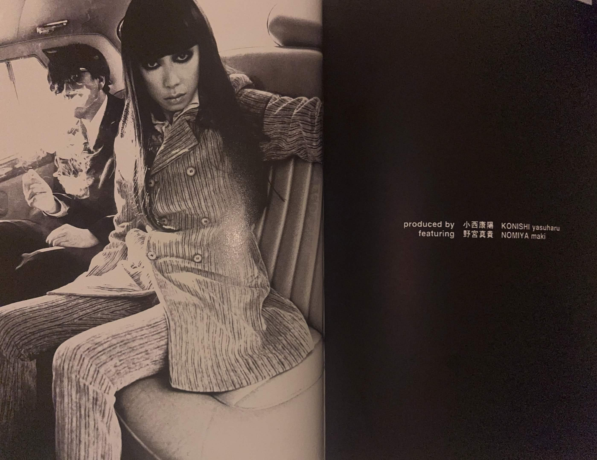
Conclusion or something
I didn't really have time to talk about their music videos, or else I'd probably write somnething so long no one would ever read it (maybe this is just an excuse and I'm lazy...), but a lot of what I talked about also applies to their music videos, and I also LOVE them so much, so go check them out!!
Could I really describe their style in a short paragraph? If I had to, I'd say its their ability to create a style that perfectly matches their eclectic music that really appeals to me, as well as how they manage to make something thats stylish, cool, sophisticated AND fun simultaneously. Usually even achieving ONE of those things is difficult, its amazing they can pull it all off so easily. I feel like maybe we should all wear our influences on our sleeve in the way P5 does, and let the combination of all the random things we love create something new and unique. Anyway I'm gonna stop writing because I could have probably condensed this all into a really well written article if I was a good writer but whatever, you can enjoy my rants I guess LOL.
Recommended listens
- The essential album: Bossa nova 2001 (1993)
- My album pick: Overdose (1994)
- Song Picks (there are too many good picks...): Triste (please please check out the music video)
Bonus gallery
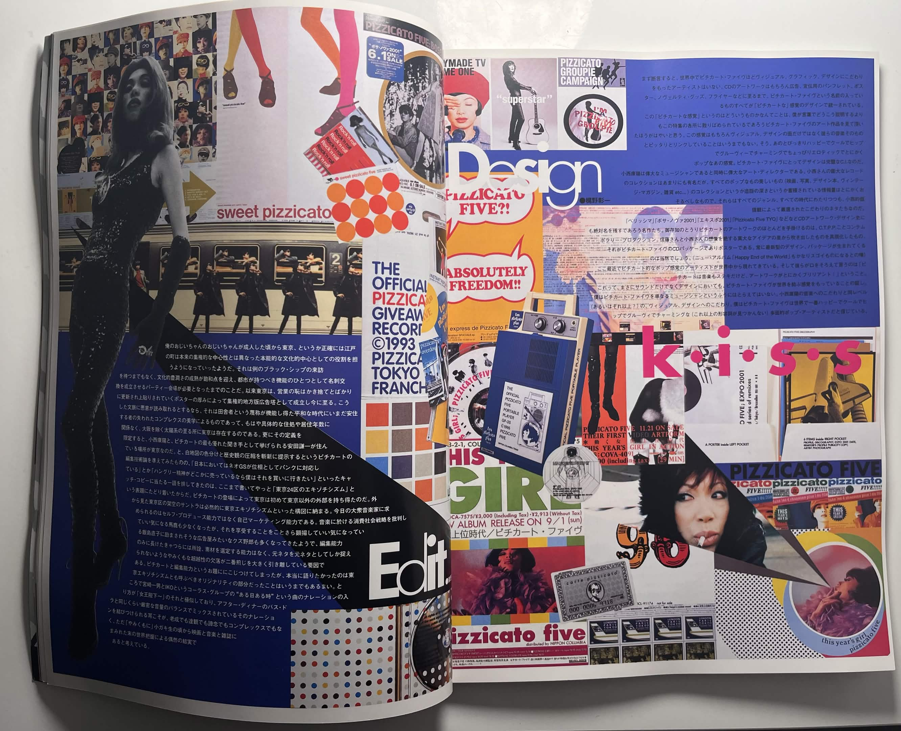
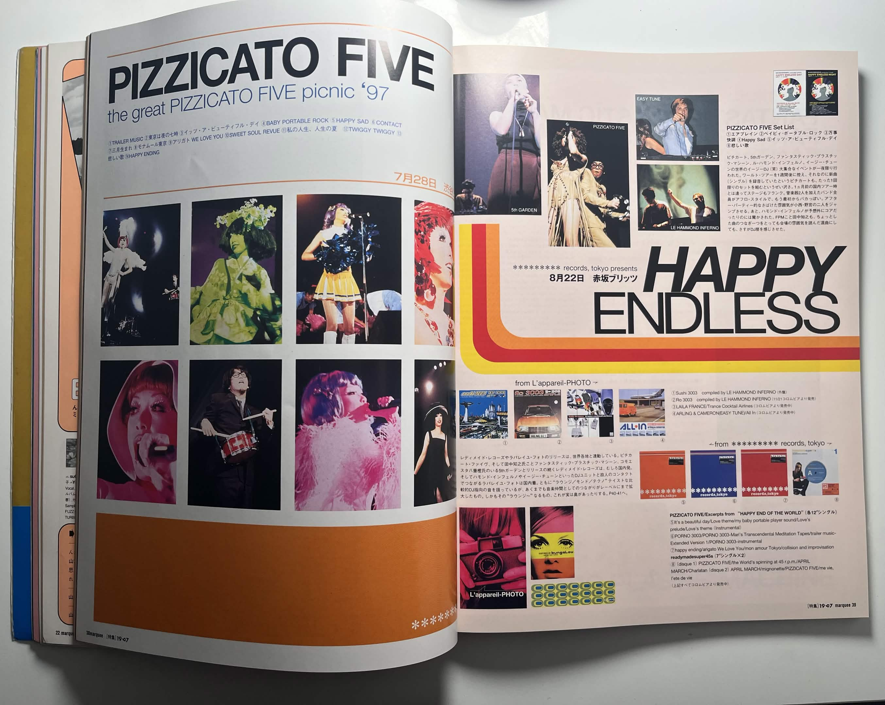
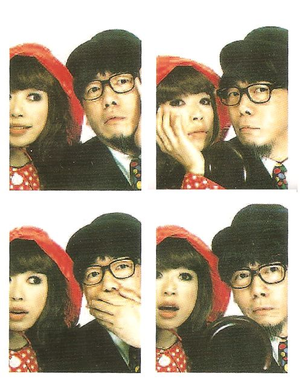
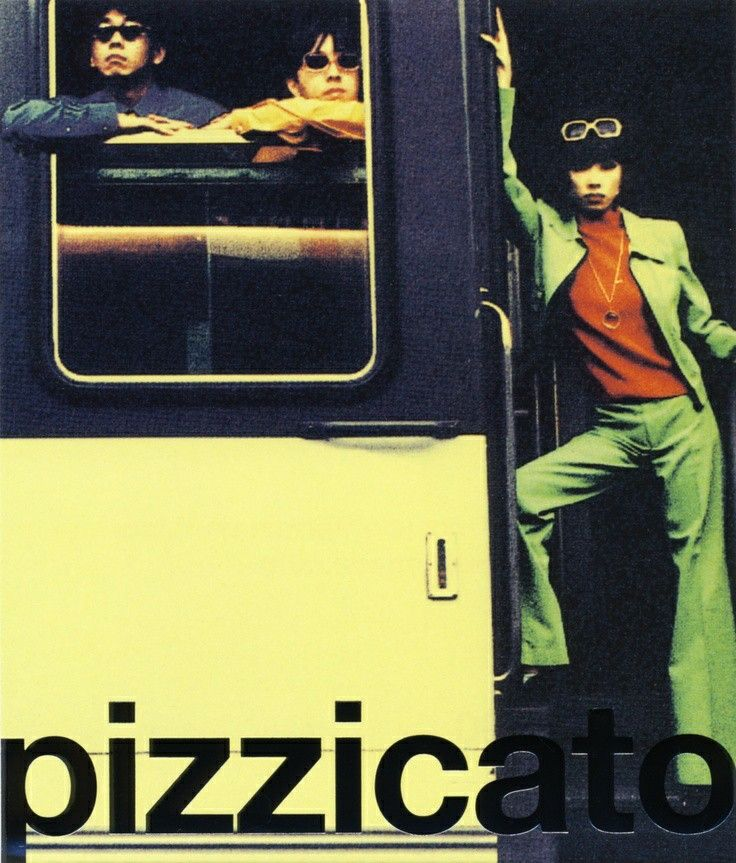